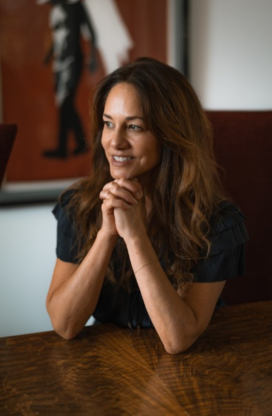

CaterinaAlvarez
Editor and writer
In 2016, I got an idea to write a book and started studying the art and craft of fiction like crazy at a not-for-profit devoted to the literary arts. I got a few stories published and began reading the slush pile for several literary journals.
One of them, an indie press, hired me as an editor in 2022. Another, an online magazine that publishes one work of fiction a day 365 days a year, also hired me per my application.
Soon, authors whom I served for these publications asked if I could help them on the side with their works-in-progress. I discovered I adore this type of work: I love stories and people and writing and working on my own time in spaces of my choice, often from far-flung places.
Experience
Caterina has been editing fiction and poetry for Thirty West Publishing House since May 2022 and Flash Fiction Magazine since June 2023. She has also edited several full-length works-in-progress as a freelance developmental editor. While she received her Masters at USC Annenberg School (2000), she began studying the art and craft of fiction in 2016 at The Lighthouse Writers Workshop, where she continues to study to this day. She has studied literary theory and criticism as well as the nuts and bolts of technique with an astounding collection of professors ranging from famous authors like Rachel Cusk, Rebecca Makkai, and Mat Johnson to professors from top-tier universities like Brown and many more. She is forever grateful for the education from Lighthouse.
From writers
It’s been my great fortune to work with Caterina on multiple creative writing projects over the years, first in her capacity as an editor at a literary journal to which I’ve submitted short stories, and second as a reader and editor for my first novel. I find her technically brilliant. And even more noteworthy, she expresses genuine care about my work. There’s an empathy that shines through. It matters to her that the stories and characters rise to the highest level of craft and artistry. I am grateful for her presence in my writing world.
I’ve worked with many editors, but Caterina is the one I come back to. I appreciate her attention to detail, her focus on helping me craft the story I’m trying to tell, and her willingness to challenge me when something could be sharper.
Most of all, I appreciate the learning experience. Caterina doesn’t just edit; she teaches. I’ve seen my writing improve because of our work together, and more of my stories have found homes because of it.